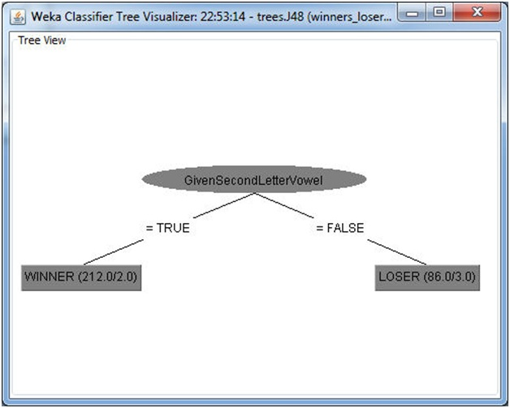

For this project, we were given a list of data records, each consisting of two fields, a name and a two member class label - winners and losers. The goal was to develop a classification model for choosing between winners and losers.
I started by examining the data set first and since there were only 298 pieces of data I used MS Excel because it has an easy to use GUI. Since the only data available was a single string, it was important to see what formats the names had so that features could be extracted and fed to a classification algorithm. After surveying the data I made the following observations in my notebook:
It is important to note that fully surveying the data method is not necessarily possible for large data (1000000+ records). Subsets of large data can be examined, but there is a chance some features can be overlooked, especially if there are only 1 or 2 records with a given feature in the data set.
The name was comprised of a single string so my approach was to generate as many features on the letters and their arrangement as possible. This allows the algorithm to do the work and see what features work best. I figured that there was no way the classifier was generated be hand for a 300 member data set so I eliminated any ideas that could not be easily generated be a computer. These ideas were primarily pronunciation based - rhyming, alliteration, strange English language phonetics (i.e. there, their, they're), etc. I also noticed that the shortest Given and Sur name were 2 letters long. This meant that it was unlikely that there was a major classifier that was in the third letter of the name. After generating a list of feature ideas, I chose to extract the features in Excel to save time. This meant that some of the features were harder to create than others. I reasoned that I would try the features that were easy to create in Excel and see what I found. If I found nothing I could write a Ruby script to extract the full feature list. I also kept track of roughly how many members might meet a given feature. For example it was easy to see visually that there were very few people with a full First and Middle name in the data set. I intended to use this data later to aid in pruning the tree manually if need be. The features I came up with were (? Denotes binary variable):
I chose Weka to process the prepared data because it seemed easier than KNIME from the tutorials in an earlier assignment. Once I allocated enough memory to Weka and removed all the single quotes from the data it was fairly straightforward. I chose the J48 and REPTree algorithms based on previous work with Weka (see below for details). Both J48 and REPTree found the classifier immediately. The classifier is very simple with a single level tree as shown in Figure 1 - is the second character of the given name a vowel or not? Winners have a vowel as the second character of their given name, losers do not. This classifier is 98% accurate which is about as high as can be expected - there is always some noise in the data. Since the result is so obvious there was no reason to do further analysis.
During this project I learned a great deal about being careful with the data and using verification periodically. While examining the data in Excel I sorted some of the names and accidentally forgot to select the column with the class name. This randomized the data so that there were no discernable patterns and I spent an entire day trying to figure out why I could not get good results. This led me to question everything in Weka and play with a lot more of the tree algorithms and their options. It was quite interesting to try to classify data that is all noise with different algorithms then try to add and remove generated features and run again. The result of 2 sets of un-patterned data run through various tree algorithms is in my Git repository in the sub-folder "contaminated-data". The trees generated by various algorithms are quite large and would not look good pasted into Excel - please view the full JPG files. I have notes on the process I took to prune generated features out of the data set. These notes are available on request.